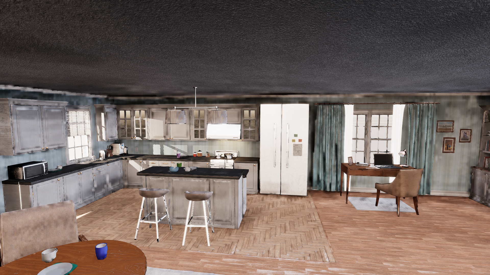
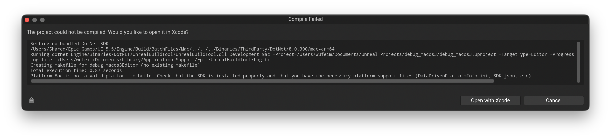
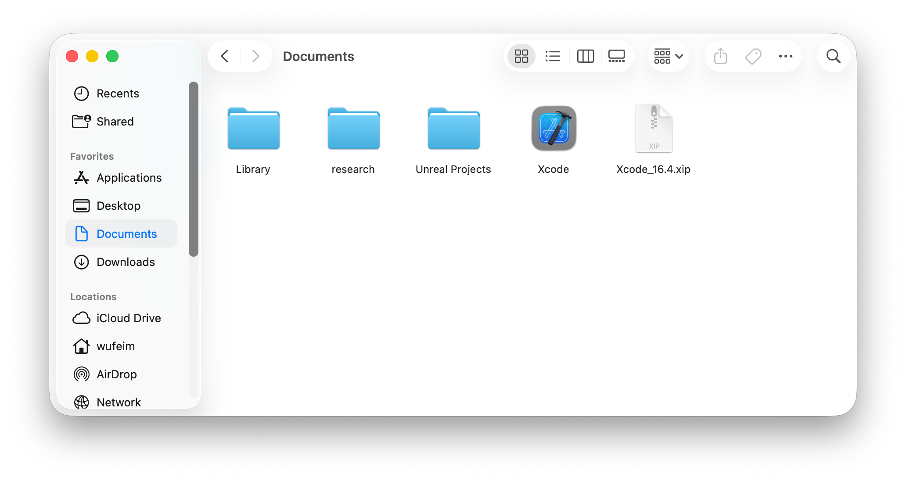
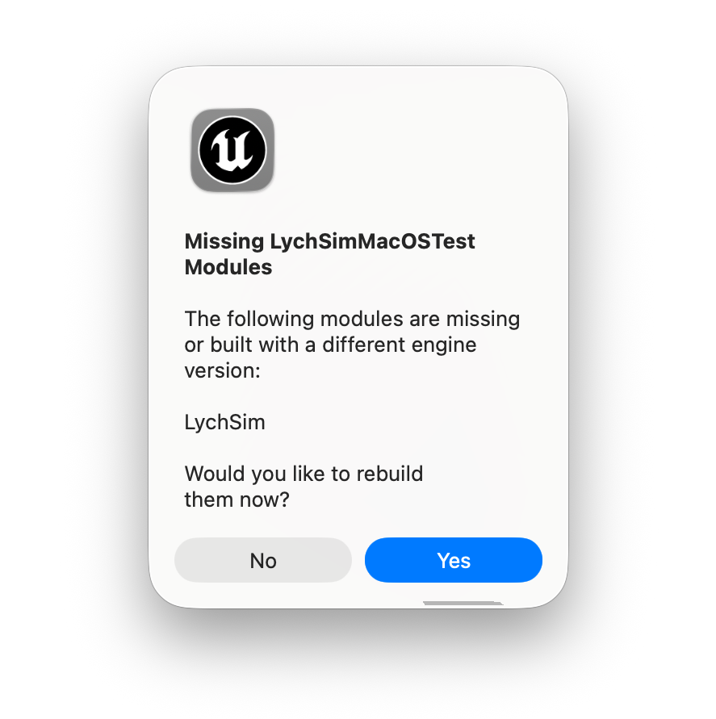
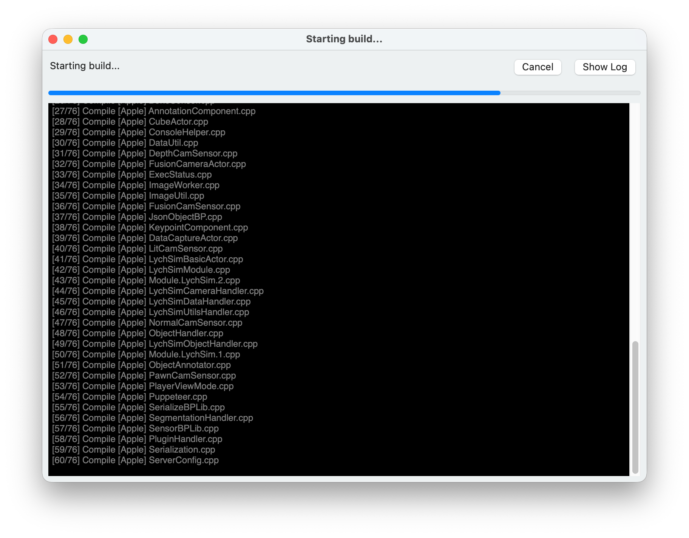
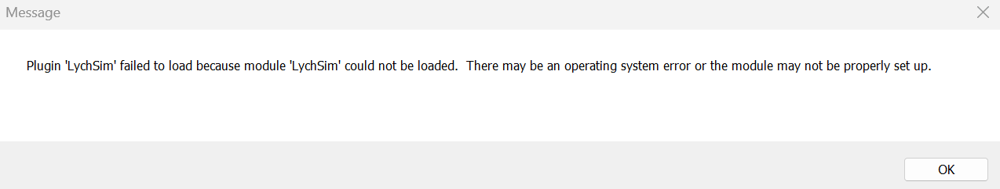
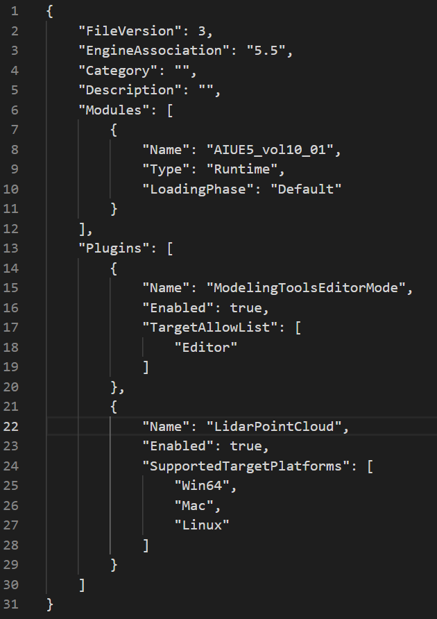

Troubleshooting#
1. Artifacts and low-quality rendering with Lumen#
Current LychSim implementation may not fully support Lumen features and may exhibit artifacts or lower quality rendering compared to native Lumen.
Fix. This should be fixed now. Please submit an issue if the problem persists.

Artifacts and low-quality rendering with Lumen.#
2. Cannot connect to UE5#
This issue may arise when the default port, i.e., 9000, is blocked or in use by another process. This is often caused by previously uncleaned instances of the server or other applications occupying the same port.
Fix. Run netstat -ano | findstr :9000 to check for unwanted processes. Then kill these processes using taskkill /PID <pid> /F.
3. Platform Mac is not a valid platform to build#
This issue may arise when using an un-supported Xcode version.

Platform Mac is not a valid platform to build.#
Fix. First download a supported Xcode version, e.g., 16.4, from xcodereleases.com. Unzip the Xcode and you will see the following.

Downloaded Xcode 16.4.#
Then use xcode-select to ensure 16.4 is the default command-line build tool.
sudo xcode-select -s /Users/wufeim/Documents/Xcode.app/Contents/Developer
# optionally, verify the selected version
xcode-select -p
Link the plugin code following the installation instructions. Open the project and you will see the prompt to compile the LychSim plugin. Everything should work now.

Prompt to compile the LychSim plugin.#

LychSim plugin compiling…#
4. Cannot package project for Linux: Issue with UbaSessionServer#
This issue may arise when packaging a project for Linux target platform. The log may show an error related to UbaSessionServer, e.g., an unhandled exception as shown below.
UATHelper: Packaging (Linux): UbaSessionServer - ASSERT: Unhandled Exception (Code: 0xc0000005)
UATHelper: Packaging (Linux): Callstack:
UATHelper: Packaging (Linux): ntdll.dll: +0x12d26
UATHelper: Packaging (Linux): ntdll.dll: +0x120f6
UATHelper: Packaging (Linux): ntdll.dll: +0x165c6e
UATHelper: Packaging (Linux): UbaDetours.dll: +0x492e
UATHelper: Packaging (Linux): ucrtbase.dll: +0x3d189
UATHelper: Packaging (Linux): ucrtbase.dll: +0x14a0c
UATHelper: Packaging (Linux): ucrtbase.dll: +0x1488b
UATHelper: Packaging (Linux): ucrtbase.dll: +0x14844
UATHelper: Packaging (Linux): ucrtbase.dll: +0x14e01
UATHelper: Packaging (Linux): combase.dll: +0x183fcd
UATHelper: Packaging (Linux): combase.dll: +0x183fed
UATHelper: Packaging (Linux): combase.dll: +0x39cbc
UATHelper: Packaging (Linux): combase.dll: +0x39306
The cause of this issue is to package project for Linux using some latest Windows updates, e.g., KB5060842, as discussed in this forum thred.
One workaround is to disable Unreal Build Automation (UBA) before packaging. Following this forum thread, you can disable UBA by editing the BuildConfiguration.xml file located at C:\Users\username\AppData\Roaming\Unreal Engine\UnrealBuildTool\BuildConfiguration.xml. Update the configuration so both bAllowUBAExecutor and bAllowUBALocalExecutor are set to false, as shown below.
<?xml version="1.0" encoding="utf-8" ?>
<Configuration xmlns="https://www.unrealengine.com/BuildConfiguration">
<BuildConfiguration>
<bAllowUBAExecutor>false</bAllowUBAExecutor>
<bAllowUBALocalExecutor>false</bAllowUBALocalExecutor>
</BuildConfiguration>
</Configuration>
5. Plugin ‘LychSim’ failed to load because module ‘LychSim’ could not be loaded.#

Error when opening projects.#
Fix. Open the .uproject file with a text editor. Add the following lines to the Plugins section.
{
"Name": "LidarPointCloud",
"Enabled": true,
"SupportedTargetPlatforms": [
"Win64",
"Mac",
"Linux"
]
}
An example of the Plugins section is shown below.

Example of the Plugins section in .uproject file.#